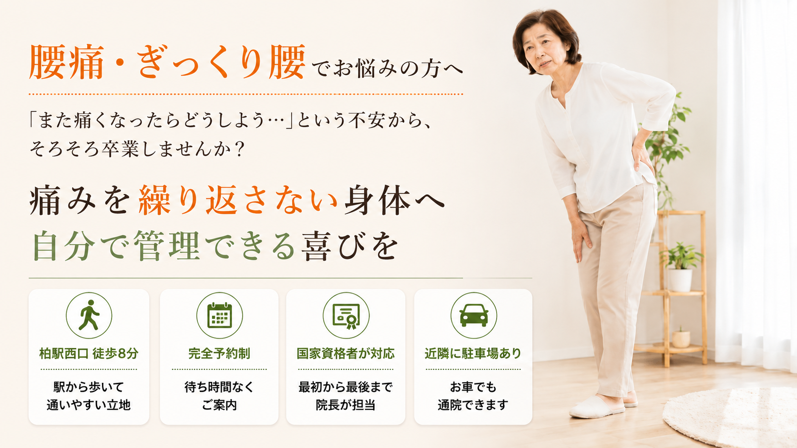
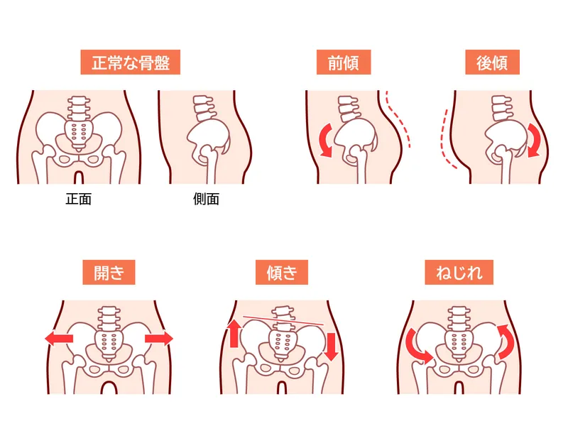
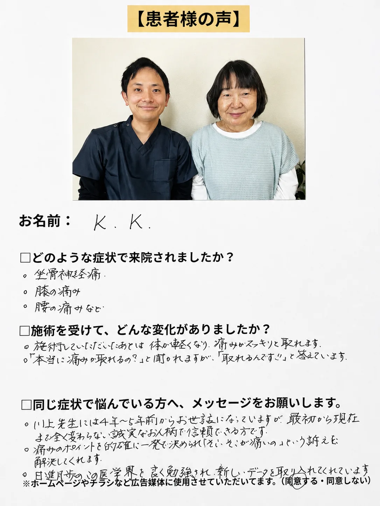
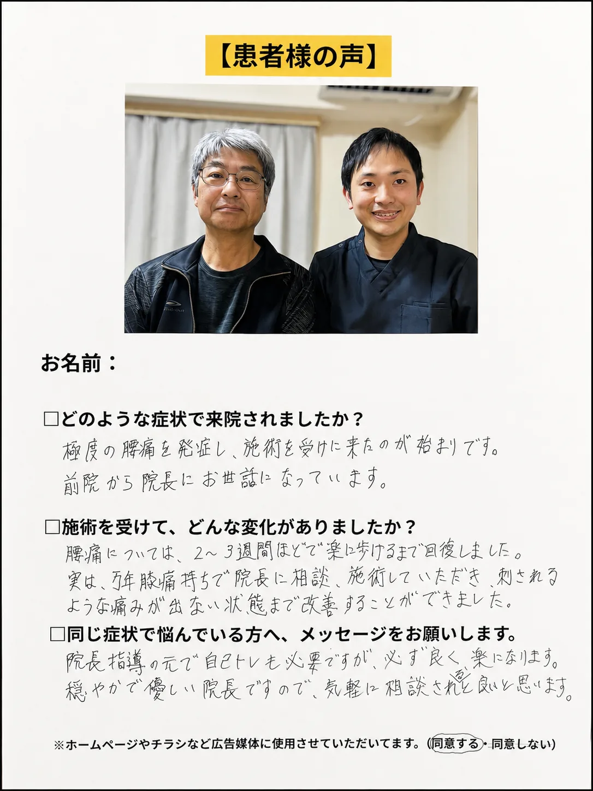
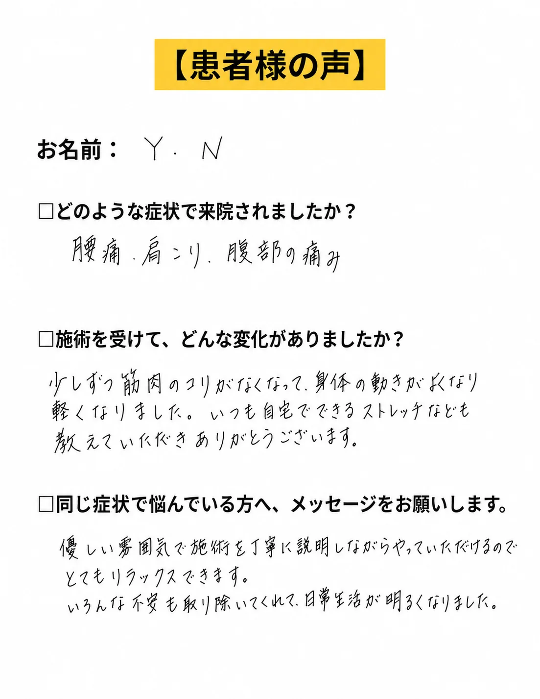
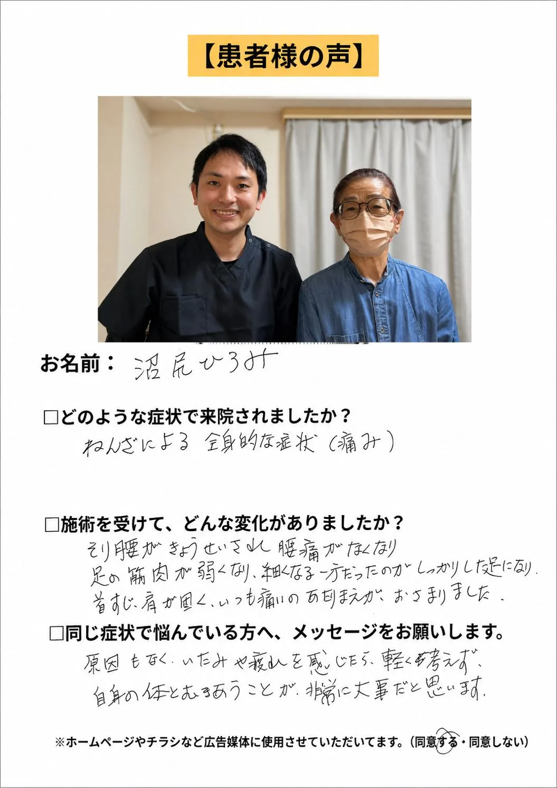

01
長時間同じ姿勢が続く
デスクワークや運転、立ち仕事などで同じ姿勢が続くと、腰まわりの筋肉が緊張し、動き始めに腰の重さや痛みを感じやすくなります。

同じ腰痛でも、朝の起き上がり、長く座った後、歩き始め、家事や仕事中など、つらさが出る場面は一人ひとり違います。整体院ひざこぞうでは、腰の状態だけでなく、股関節・足首・体幹の働きや生活動作を確認し、動きやすい身体づくりを支えます。
柏市・柏駅周辺で腰痛にお悩みの方へ
整体院ひざこぞうでは、腰だけを見るのではなく、股関節や背中の動き、姿勢、歩き方、身体を支える力まで確認します。整体と運動療法を組み合わせながら、仕事や家事、買い物、趣味を続けやすい身体づくりを支えます。
腰痛の原因は、腰だけにあるとは限りません。
長時間同じ姿勢を続けたり、股関節や背中が動きにくくなったりすると、本来は身体全体で分担するはずの負担が腰に集中します。
その状態が続くことで、筋肉が緊張したり、動いたときに痛みを感じやすくなったりすることがあります。
痛みが出ている場所だけでなく、「なぜ腰に負担が集まっているのか」を確認することが大切です。

デスクワークや運転、立ち仕事などで同じ姿勢が続くと、腰まわりの筋肉が緊張し、動き始めに腰の重さや痛みを感じやすくなります。
股関節や背中が十分に動かないと、その不足を補うために腰が必要以上に動き、負担が集中しやすくなります。
お腹やお尻など、姿勢や動作を支える筋肉がうまく使えていないと、腰まわりの筋肉が頑張りすぎる状態になります。
立ち上がる、かがむ、物を持つといった日常動作の癖によって、同じ場所に負担が繰り返しかかることがあります。
股関節や背中が
動きにくくなる
腰が代わりに
動きすぎる
筋肉や関節へ
負担が集中する
腰の重さ・痛み・ぎっくり腰などが起こりやすくなる
これは腰痛が起こる一例です。腰痛の原因や状態は一人ひとり異なるため、実際には姿勢や関節の動き、筋肉の働き、日常動作などを確認する必要があります。
硬くなった腰の筋肉をマッサージすると、一時的に楽になることがあります。
しかし、股関節の硬さや身体の使い方など、腰に負担を集めている要因が残っていると、日常生活に戻ったときに再び腰が緊張しやすくなります。
大切なのは、腰を緩めることだけではありません。
腰以外の関節の動きや、身体を支える筋肉、立つ・座る・かがむといった動作まで確認することです。
腰痛の中には、医療機関での検査や確認が優先されるものもあります。以下のような症状がある場合は、整体を受ける前に整形外科などの医療機関へご相談ください。
同じ「腰痛」でも、痛みが出る場面や身体の状態は人によって異なります。
柏市の整体院ひざこぞうでは、痛みがある場所だけを施術するのではなく、姿勢や関節の動き、筋肉の働き、日常動作まで確認します。
カウンセリングと身体のチェックをもとに、現在の状態と施術方針を分かりやすくご説明します。

当院では、身体をただ緩めるだけではなく、「動かす・支える・使い方を整える」という流れで、腰に負担が集中しにくい身体づくりを目指します。
動かす｜可動性
腰だけでなく、股関節・背中・骨盤まわりの状態を確認し、動きにくくなっている部分へやさしくアプローチします。
支える｜安定性
お腹やお尻など、姿勢や動作を支える筋肉が働きやすくなるように、状態に合わせた運動を行います。
使う｜動作改善
立ち上がる、かがむ、物を持つなど、実際の日常動作を確認し、無理なく続けられる身体の使い方やセルフケアをお伝えします。
同じ腰痛でも、痛みが出る姿勢や生活で困っている場面は人によって違います。初回から一方的に施術を進めるのではなく、話と身体の状態を確認しながら方針を相談します。
症状だけでなく、これまでの経過、生活上の不安、目指したい状態を伺い、説明に納得していただいたうえで進めます。
立つ、歩く、座る、かがむ、物を持つなど、日常生活に近い動きを見ながら、どこに負担が集まりやすいかを整理します。
股関節や背中の動き、足腰や体幹で身体を支える力、立ち上がりや歩行などの動作を段階的に確認します。
手技だけで終わらせず、状態に合わせた運動や動作練習を組み合わせ、日常生活で使いやすい身体を目指します。
通院だけに頼るのではなく、ご自身でも身体を管理しやすくなるよう、できる範囲のセルフケアや身体の使い方を提案します。
痛みが出る動作や、病院で言われたことなどをLINEで送っていただければ、来院前のご相談も可能です。
通院頻度は、痛みの強さや期間、生活環境、目指す状態によって異なります。
初回に身体の状態を確認したうえで、必要な頻度と期間の目安をご説明します。
無理に通院を勧めることはありませんので、ご希望や生活状況も含めてご相談ください。
腰痛があるときは、「誰かに合った方法」がそのまま自分に合うとは限りません。痛みが増える行動や自己判断には注意が必要です。
強い刺激が合うとは限りません。腰を強く押すほどよい、と決めつけず、身体の反応を確認することが大切です。
運動は大切ですが、痛みが増える場合は内容の見直しが必要です。無理をして続けることは避けましょう。
腰痛のストレッチとして紹介されている方法でも、身体の状態によって合う・合わないがあります。
薬を使用している場合は、自己判断で中止せず、医師や薬剤師の指示を優先してください。
急な悪化、強いしびれ、力の入りにくさ、排尿や排便の異変がある場合は、整体の前に医療機関へご相談ください。
自宅でできることは、痛みの出方や身体の状態によって変わります。ここでは、無理なく取り入れやすい考え方を紹介します。
座りっぱなし、立ちっぱなしがつらさにつながる場合があります。無理のない範囲で姿勢を変える時間を作りましょう。
長く歩くのが不安な場合は、短い距離から始めます。症状が強くなる場合は距離やペースを調整してください。
ストレッチを行う場合も、強く伸ばせばよいわけではありません。違和感が強い場合は中止してください。
医療機関で運動制限や注意点を伝えられている場合は、その内容を優先してください。
痛みの出方は人によって異なります。整体院ひざこぞうでは、身体の状態を確認したうえで、できる範囲のセルフケアをお伝えします。
腰だけを一律にほぐすのではなく、生活で負担が集まる動作と身体の支え方を確認します。
いつからつらいのか、何をすると痛むのか、再開したい生活まで丁寧に伺います。
姿勢だけでなく、実際の動作で腰に負担が集まりやすい場面を見ます。
股関節、足首、体幹の働きを確認し、腰だけに頼らない動き方を目指します。
手技で終わらず、日常で使いやすい身体に近づけるための運動も提案します。
身体の状態と生活状況を踏まえ、必要な取り組み方を分かりやすく説明します。
痛みを我慢して強い運動を続ける、痛む場所だけを強く押し続ける、インターネットの体操を状態確認なしで繰り返すことは、合わない場合があります。
足の力が入りにくい、排尿・排便の異常、発熱、転倒後の強い痛みがある場合は、まず医療機関へご相談ください。
長時間同じ姿勢を避ける、痛みが増えない範囲で歩く、股関節や背中を軽く動かすなどが合う場合があります。強い痛みやしびれが増えるときは中止し、状態に合う内容を確認しましょう。
このページの役割
腰の重さ・動き始め・長時間同じ姿勢でのつらさを中心に、股関節や背中、体幹の動きとの関係を確認します。
MEDICAL GUIDANCE
症状の出方には個人差があります。迷う場合や症状が強い場合は、まず医療機関へご相談ください。
次のような場合は、整体の予約より医療機関への相談を優先してください。
緊急ではなくても、早めの検査や診察が大切な状態があります。
医療機関との役割を分けながら、次のような相談に対応します。
このページは一般的な情報提供であり、診断を目的とするものではありません。症状や状態は一人ひとり異なるため、必要に応じて医療機関へご相談ください。
PATIENT VOICE
腰痛と関わりやすいお悩みで来院された方の内容を掲載しています。症状や経過には個人差があるため、初回は状態を確認しながら方針をご説明します。

K.K様

K.T様

Y.N様

N.H様
※効果には個人差があります。掲載しているお声は掲載許可をいただいた方の個人の感想であり、成果を保証するものではありません。
写真は左右にスライドできます


予約前に特に多い不安だけを、短くまとめました。
初回カウンセリング＋全身整体コース
カウンセリング・状態確認込み。まずは相談だけでも大丈夫です。
腰のつらさを一緒に整理し、動きやすい身体づくりをサポートします。
LINEからご希望日時を送ってください。空き状況を確認して、こちらから返信いたします。
【受付時間】9:00〜19:00 【定休日】日曜
施術中は電話に出られないことがあります。後ほど折り返しお電話いたします。
| 時間 | 月 | 火 | 水 | 木 | 金 | 土 | 日 |
|---|---|---|---|---|---|---|---|
| 9:00〜19:00 | ● | ● | ● | ● | ● | ● | - |
完全予約制／定休日：日曜
詳しい道順・建物入口・駐車場については、アクセスページでご確認いただけます。
最後に、ご相談はこちらから
メールフォームからお名前・お悩み・ご希望日時をお送りください。確認後、折り返しご連絡いたします。
送信が完了しました。
アクセスを確認する